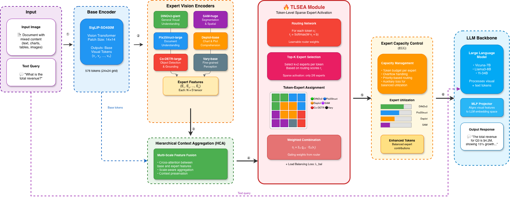
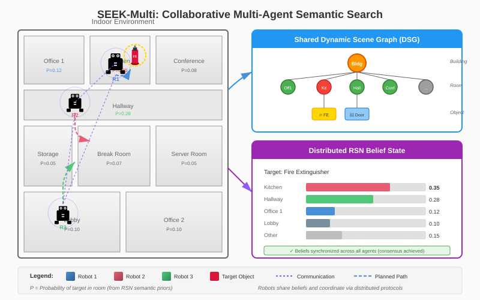
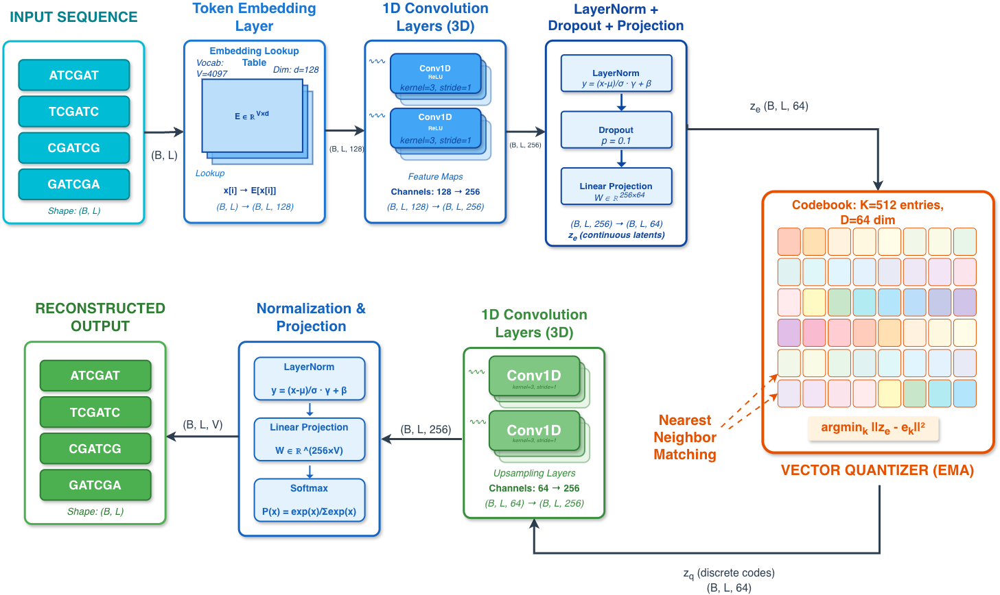
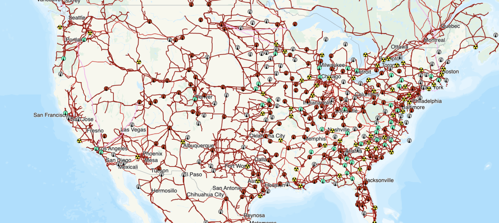
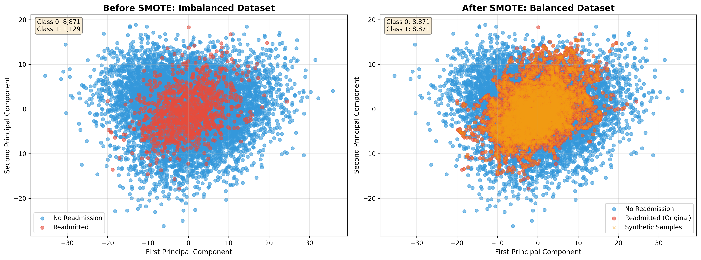
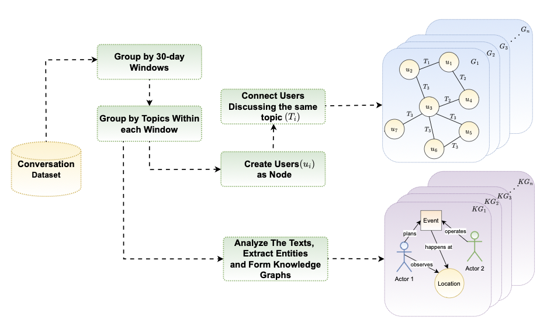

About Me
I am a PhD candidate in Computer Science at Georgia State University, researching reasoning in language and multimodal models, LLM agents, and diffusion language models. The question that ties my work together: how do we make capable AI systems reason reliably over long horizons while staying efficient, controllable, and trustworthy?
My recent work spans the full arc from theory to shipped system. During my AI Research internship at Lenovo (Qira), I derived a cost model for LLM web agents and built ReCAP, executable procedural memory that cuts per-task inference cost by 52.6% while raising task success from 76.9% to 92.3%, validated over ~700 controlled live-web episodes. In my lab work I study reasoning in language and multimodal models, diffusion LMs (block-size-elastic training in DIAL, adaptive masking in ATAT), and sparse mixture-of-experts vision and language models (ViMoE).
I care about rigorous empiricism, controlled ablations, reproducible benchmarks, and honest negative results, as well as work that is open: I contribute to evaluation and safety tooling in the open-source community and write about AI daily on X. I am part of the Advanced Mobility & Augmented Intelligence Lab, advised by Dr. Haoxin Wang.
Research Interests
News
-
Oct 2026
Promoted to Vice President of the ACM Student Chapter at Georgia State University (previously Secretary).
-
2026
Three papers under review: two at ICLR 2027 (DIAL, ATAT on diffusion language models) and one at NAACL (ARR) (ReCAP, LLM web-agent efficiency).
-
2026
Abstract accepted to the Graduate Conference for Research, Scholarship and Creative Activity at Georgia State University.
-
Jul 2026
Invited to Google Public Sector Leaders Connect in Atlanta.
-
Summer 2026
Completed an AI Research internship at Lenovo (Qira), producing ReCAP as first author.
Research Experience
AI Research Intern
Jun–Aug 2026Lenovo · Qira (Personal AI Assistant) · Chicago, IL
Derived a three-term cost model for LLM web agents and built ReCAP: executable procedural memory with guarded zero-LLM replay. −52.6% token cost at 76.9%→92.3% success over ~700 live-web episodes; 428× cheaper on replayed tasks. Also led red-teaming of context grounding and meeting summarization.
AI PhD Researcher
Sep 2025 – PresentAdvanced Mobility & Augmented Intelligence Lab, GSU · Advisor: Dr. Haoxin Wang
Reasoning in language and multimodal models; diffusion language models (DIAL, block-size-elastic training; ATAT, adaptive surprisal-based masking, −7.4% perplexity); and sparse MoE vision and language models (ViMoE, dense accuracy at ~3× fewer active parameters).
AI PhD Researcher
Aug 2024 – Sep 2025Assistive Intelligence Lab, GSU · Advisor: Dr. Yi Ding
LLM-augmented planning for embodied agents with spatial–semantic memory; +12% multi-step navigation completion in AI2-THOR.
Publications & Preprints
Under Review
ReCAP: Amortizing Web-Agent Inference with Executable Procedural Memory and Adaptive Context Management
A three-term cost model for ReAct web agents plus executable, slot-parameterized procedural memory replayed with zero LLM calls: −52.6% tokens at 76.9%→92.3% success, 428× cheaper on replayed tasks.
DIAL: Block-Size-Elastic Training for Diffusion Language Models
Mixed block-size training with per-block noise conditioning enables inference-time quality and compute trade-offs from a single parameter set, with no retraining.
ATAT: Adaptive Time-Warped Masking for Discrete Diffusion Language Models
Per-token masking driven by self-supervised surprisal scores, achieving a 7.4% perplexity reduction over uniform corruption baselines.
Peer-Reviewed & Preprints

ViMoE: Vision Mixture of Experts with Multimodal Context Awareness

🤖 SEEK-Multi: Collaborative Multi-Agent Semantic Reasoning
Projects

Contrastive Deep Learning for Variant Detection in Wastewater Genomic Sequencing

GraPO: Predicting Power Outages During Extreme Weather Events Using Graph-Based Methods

Predicting Hospital Readmission Risk from Electronic Health Records: A Comparative Study of Classical and Ensemble Models

Understanding Far-right Groups Activities through Knowledge Graph Analysis
Open Source
I contribute to evaluation and safety tooling for language models, and build research prototypes in the open.
Framework for large language model evaluations (UK AI Security Institute).
LLM EvaluationCommunity-contributed evaluations built on top of Inspect.
BenchmarksLLM evaluation framework for unit-testing model outputs.
TestingResearch prototypes: guided-diffusion conflict resolution, long-video understanding, and adaptive noise scheduling for audio synthesis.
Diffusion ResearchService & Honors
Leadership & Service
- Vice President, ACM Student Chapter, Georgia State University (2026–present; previously Secretary)
- Organize biweekly technical talks and events for the student research community
- Member: AMAI Lab · Collaborative Human-AI Center (CHAI) · ML Collective · Black in AI · NSBE
Honors & Invitations
- Invited, Google Public Sector Leaders Connect, Atlanta (2026)
- Abstract accepted, Graduate Conference for Research, Scholarship and Creative Activity, GSU (2026)
- B.Sc. summa cum laude, GPA 3.89/4.0 (Belgorod State University)